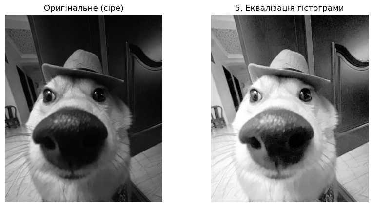

Тема: OpenCV. Просторові методи обробки зображень І. Градаційні перетворення і гістограмні методи (short version)
Мета: знайомство з поелементними і гістограмними просторовими методами обробки зображень засобами OpenCV у середовищі Anaconda із застосуванням Jupyter Notebook засобами мови програмування Python.
import cv2 as cvimport numpy as npimport matplotlib.pyplot as pltimage_path ='scr/123.jpg'image_gray = cv.imread(image_path, cv.IMREAD_GRAYSCALE)if'image_gray'notinlocals() or image_gray isNone:print("ПОМИЛКА: Змінна 'image_gray' не знайдена.")else: image_equalized = cv.equalizeHist(image_gray) plt.figure(figsize=(10, 5)) plt.subplot(1, 2, 1) plt.imshow(image_gray, cmap='gray') plt.title("Оригінальне (сіре)") plt.axis('off') plt.subplot(1, 2, 2) plt.imshow(image_equalized, cmap='gray') plt.title('5. Еквалізація гістограми') plt.axis('off') plt.show()

Еквалізація (або вирівнювання) гістограми — це метод, який автоматично покращує глобальний контраст зображення. Він ґрунтується на аналізі гістограми зображення, тобто розподілу пікселів за їхньою яскравістю (від 0 до 255). Сенс методу полягає в тому, щоб перетворити початковий розподіл яскравостей на рівномірний (або “плаский”). Це досягається шляхом “розтягування” тих діапазонів яскравостей, які зустрічаються найчастіше, і “стискання” тих, що зустрічаються рідко. В результаті темні ділянки стають темнішими, а світлі — світлішими, що робить зображення значно чіткішим. Цей метод особливо ефективний для зображень, які є занадто темними, занадто світлими або мають низький контраст.
Оцінка гістограми — це процес аналізу графіка розподілу інтенсивностей (яскравостей) пікселів у зображенні. Гістограма показує, скільки пікселів кожного рівня яскравості (від 0 до 255) присутньо на зображенні. Візуально це дозволяє швидко оцінити загальні характеристики зображення:
Чи є воно темним (більшість пікселів зліва).
Чи є воно світлим (більшість пікселів справа).
Чи має воно низький контраст (всі пікселі скупчені у вузькому діапазоні).
Оцінка гістограми дозволяє обґрунтувати вибір оптимального значення порогу для бінаризації. Якщо гістограма має два чіткі піки (бімодальний розподіл), які зазвичай відповідають фону та об’єкту, то оптимальним порогом є значення яскравості, що знаходиться в “долині” (локальному мінімумі) між цими двома піками.
Контрольні запитання
У чому полягає сенс градаційних перетворень?
Сенс градаційних перетворень полягає у зміні яскравості (інтенсивності) пікселів для модифікації зображення. Це точкові операції, які працюють в околі 1x1. Це означає, що нове значення яскравості пікселя (s) залежить лише від його початкового значення (r) згідно з певною функцією перетворення (s = T(r)).
На чому ґрунтуються гістограмні методи?
Гістограмні методи ґрунтуються на статистичному аналізі розподілу пікселів за їхньою яскравістю у всьому зображенні. На відміну від градаційних перетворень (які дивляться на кожен піксель окремо), ці методи спочатку аналізують гістограму — графік, що показує, скільки пікселів кожного рівня яскравості (від 0 до 255) присутньо на зображенні. Ця статистична інформація потім використовується для модифікації зображення, наприклад:
Еквалізація гістограми: “Розтягування” діапазону яскравостей для посилення контрасту.
Оцінка гістограми: Використовується для знаходження оптимального порогу (наприклад, для бінаризації).